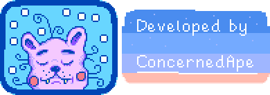

Create the farm of your dreams: Turn your overgrown fields into a lively and bountiful farm!
Become a part of the local community: Pelican Town is home to over 30 residents you can befriend!
Meet someone special: With 12 townsfolk to date, you may even find someone to start a family with!
Learn to live off the land: Raise animals, go fishing, tend to crops, craft items, or do it all! The choice is yours...
Explore vast, mysterious caves: Encounter dangerous monsters & valuable treasures deep underground!
Customize: There are hundreds of character & home decoration options to choose from!
